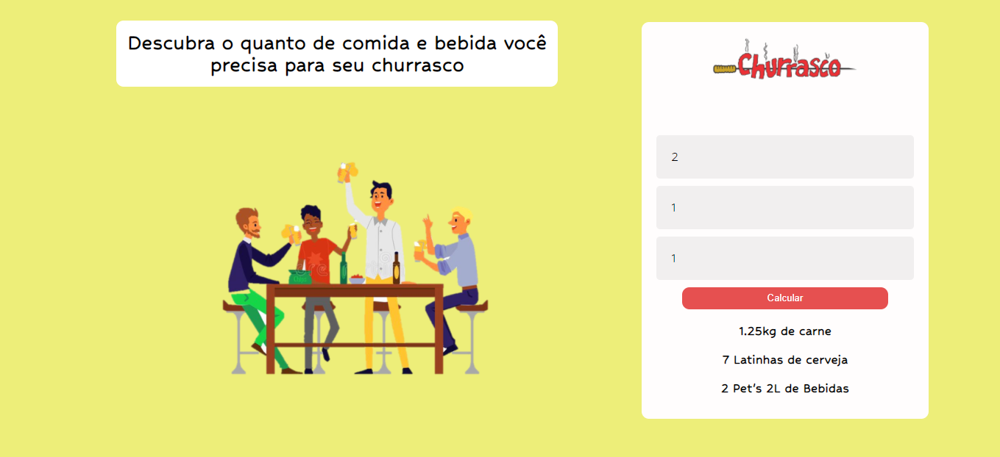
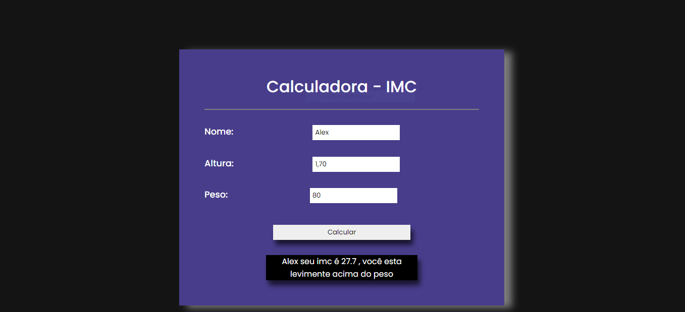
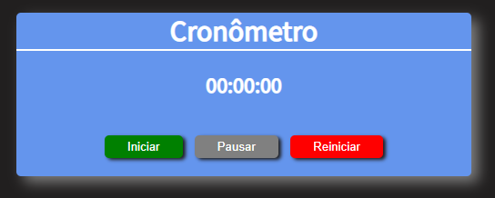

Projetos
Churrascômetro
Churrascômetro foi um projeto idealizado no curso Programador br.
Esta aplicação calcula a quantidade de alimentos por convidados.

Tecnologias utilizadas:
- HTML
- CSS
- Javascript
Calculadora de IMC
Esta calculadora que mede o IMC (Índice de Massa Corporal).

Tecnologias utilizadas:
- HTML
- CSS
- Javascript
Cronômetro
Cronômetro usado para registrar tempo após a inicialização.

Tecnologias utilizadas:
- HTML
- CSS
- Javascript